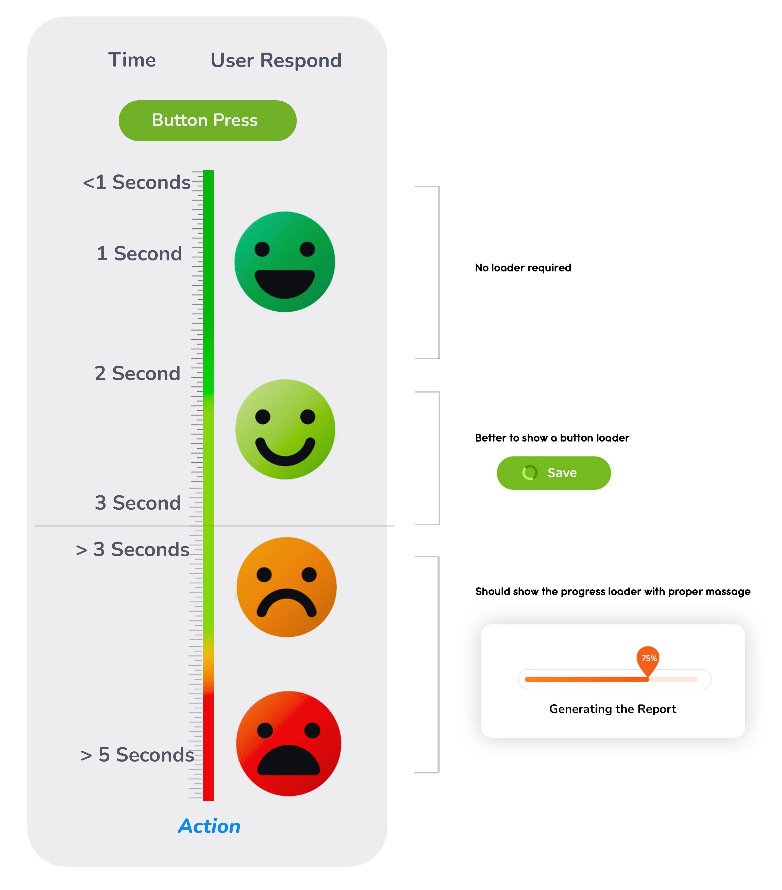

3 Seconds Rule

UX expert syas stating that after 1 second of load time; users can sense a delay, timing really does matter! Slow loading speed can lead to frustration, dissatisfaction, and even abandonment of the website or application by users. when trigger a action it should be trigger the action or screen at least the base screen should loaded.
There’s no reason why a user will stay on a page to perform an action if it takes beyond 3 seconds to load. You’ve got just 3, the more you save, the more convincing you can do. Improving usability is not limited to changing the design. While designing or re-designing, should concern on speed of actions that user have to perform in. According to the 3 seconds rule, users should not take over three seconds on a page to access the desired content/action. Otherwise, they will be frustrated and have a negative interaction experience.
There’s no reason why a user will stay on a page to perform an action if it takes beyond 3 seconds to load. You’ve got just 3, the more you save, the more convincing you can do. Improving usability is not limited to changing the design. While designing or re-designing, should concern on speed of actions that user have to perform in. According to the 3 seconds rule, users should not take over three seconds on a page to access the desired content/action. Otherwise, they will be frustrated and have a negative interaction experience.
Ruls to fallow

 Placeholder Standards
Placeholder Standards
1 second
best is to trigger the action/open under 1 second so the user dont feel any dealy and system feel smooth
3 Second
This is maxsimum wating time that can user wait untill they get fustrated and system feel slow, so we have maintain all the action and form opening happen in under 3 seconds
Also if it take more that 1 scound better to show button loading or press animation to prevate the use clicking multipul time same action button and ideacti it was pressed
More than 3 seconds
Its must to show proper progress loading with clear massage to the user, that action is happening it take this much time. otherwise user will fusterated and loose the intersting of the action ting its broken or not working, showing in spinner is also not good option beocuse pycologicaly its make user tired and noyt given any idea when it wiil be done